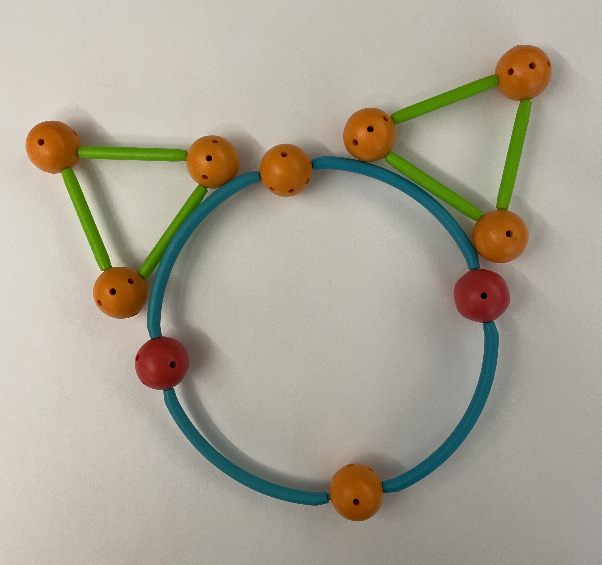
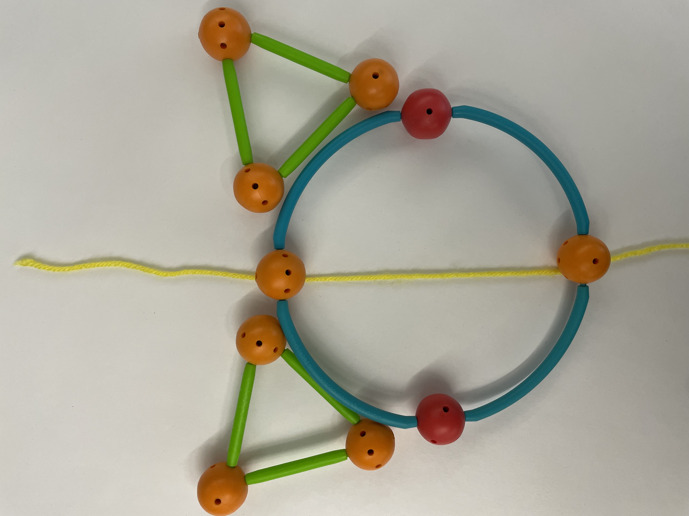

Do It! Geometric Shapes: Symmetry in Our World
 The Challenge
The Challenge
Your challenge is to identify real world objects that have at least one line of symmetry. Then, you will construct these real-world objects and identify the line(s) of symmetry in your models.
Project Steps
-
Locate Objects
-
Build Objects
-
Identify and Describe Line(s) of Symmetry
Locate Objects
Locate objects that have at least one line of symmetry. Look at the objects around you or think about objects you have seen before. Work with your partner to list some objects in our world that have line(s) of symmetry.
What did you notice about these objects? How do you know they have at least one line of symmetry?
Sketch or take pictures of the objects you found. Describe your these objects, discuss if they relate to any shapes you know, and identify any lines of symmetry they have. You will upload these notes in your project submission.
Build Objects
Now that you have explored objects in your surroundings or even outside the lab, you are ready to build. Use the Geometric Shapes Building kit to build the objects you identified in our world that have at least one line of symmetry.

Identify and Describe Line(s) of Symmetry
- Identify and describe the line(s) of symmetry for each object you created. Add the details to a table like the one below. You will upload this in your project submission.
- Take a photograph of (or draw) each object you built.
Make a list of all the parts you used to create your object. (Another group should be able to use your lists to collect the parts needed to create the same object.) - Identify and describe the line(s) of symmetry.
- You might choose to use a string or a piece of paper to show where the line of symmetry is located for each object.
- Take a photograph (or draw a picture) that shows the line of symmetry for each object.
- Explain how you know each line you identified is a line of symmetry.
|
Object 1 |
Object 2 |
Object 3 |
|
|---|---|---|---|
|
Photograph |
|||
|
List of Parts Used |
. |
||
|
Identify and Describe the Lines of Symmetry |
